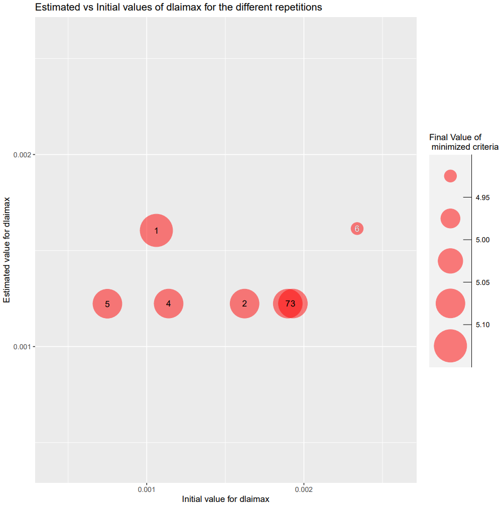
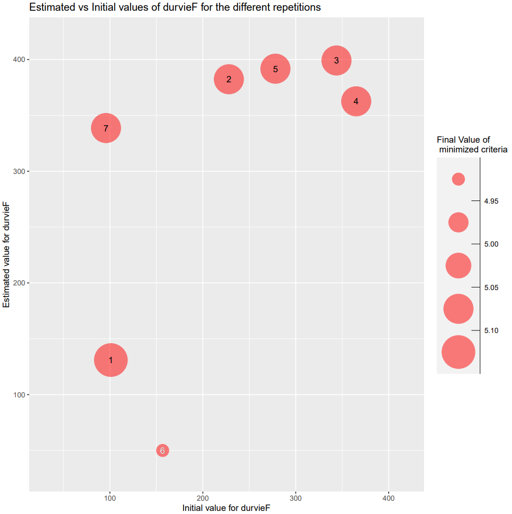
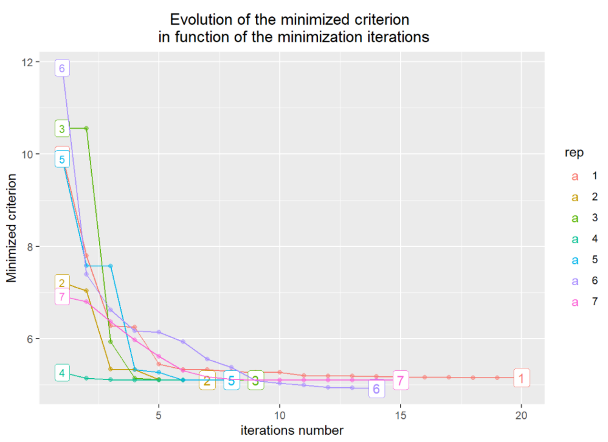
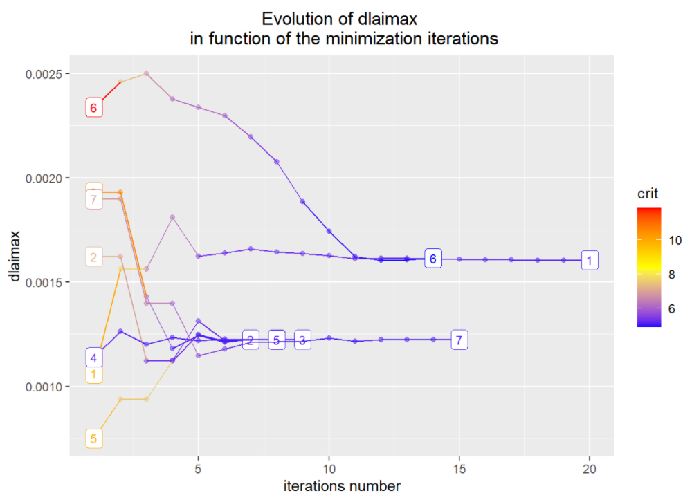
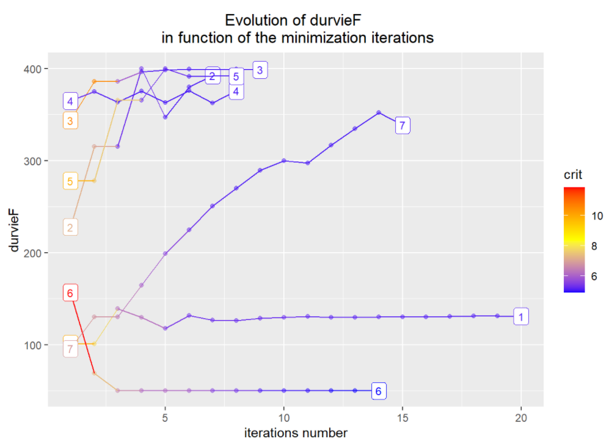

vignettes/Parameter_estimation_simple_case.Rmd
Parameter_estimation_simple_case.RmdThis document presents an example of a simple parameter estimation using the Stics model with a single situation, a single observed variable and 2 estimated parameters, just to illustrate how to use the package. A more complex example with simultaneous estimation of specific and varietal plant parameters from a multi-varietal dataset is presented in another vignette. Parameter estimation on chained situations (e.g. rotations) is also possible with the Stics model (see successive_usms in argument model_options of stics_wrapper). A vignette will be provided in next versions.
Data for the following example comes from a maize crop experiment (see description in Wallach et al., 2011).
The parameter estimation is performed using the Nelder-Mead simplex method implemented in the nloptr package.
# Install and load the needed libraries
if(!require("SticsRPacks")){
devtools::install_github("SticsRPacks/SticsRPacks")
library("SticsRPacks")
}
# DEFINE THE PATH TO YOUR LOCALLY INSTALLED VERSION OF JAVASTICS
javastics_path=path_to_JavaStics
# Download the example USMs and define the path to the JavaStics workspace (JavaStics XML input files):
data_dir= file.path(SticsRFiles::download_data(example_dirs="study_case_1", version_name = "V9.0"))
javastics_workspace_path=file.path(data_dir,"XmlFiles")The Stics wrapper function used in CroptimizR works on Stics input files (text formatted files new_travail.usm, climat.txt, …) stored per USMs in different directories (which names must be the USM names). stics_inputs_path is here the path of the directory that will contain these USMs folders.
If you start from xml formatted input files (JavaStics format: usms.xml, sols.xml, …) the following lines allow generating txt files from xml files. In this example, xml files are stored in javastics_workspace_path and the Stics input files (test format) will be stored in stics_inputs_path=file.path(data_dir,"TxtFiles")
stics_inputs_path=file.path(data_dir,"TxtFiles")
dir.create(stics_inputs_path)
gen_usms_xml2txt(javastics_path = javastics_path, workspace_path = javastics_workspace_path,
target_path = stics_inputs_path, verbose = TRUE)Here model parameters values are read in the model input files.
# Set the model options (see '? stics_wrapper_options' for details)
model_options= stics_wrapper_options(javastics_path, data_dir = stics_inputs_path, parallel=FALSE)
# Run the model on all situations found in stics_inputs_path
sim_before_optim=stics_wrapper(model_options=model_options)For Stics, observation files must for the moment have exactly the same names as the corresponding USMs and be stored in a unique folder to be read by the get_obs function. This will be improved in next versions.
In this example, we only keep observations for situation (i.e. USM for Stics) sit_name and variable var_name.
obs_list defines the list of situations, variables and dates that will be used to estimate the parameters. Use the function filter_obs (see ? filter_obs) for removing situations, variables and/or dates from an observation list.
In variables and parameters names, “(*)” must be replaced by "_*" to be handled by R (e.g. lai(n) is denoted here lai_n).
sit_name="bo96iN+" # can be a vector of situation names if you want to consider several, e.g. c("bo96iN+","bou00t1")
var_name="lai_n" # can be a vector of variable names if you want to consider several, e.g. c("lai_n","masec_n")
obs_list= get_obs(javastics_workspace_path, usm_name = sit_name)
obs_list= filter_obs(obs_list, var_names= var_name, include=TRUE)param_info must contain information about the parameters that will be estimated in the parameter estimation process from the situations, variables and dates defined in obs_list.
It must include the definition of their upper and lower bounds (-Inf and Inf can be used). This will determine the list of estimated parameters.
All the numerical parameters which values can be provided to the model through its R wrapper can be estimated using the provided parameter estimation methods (although it may not work well for integer parameters).
Initial values for the minimization can also be provided in param_info (see ? estim_param).
optim_options must contain the options of the parameter estimation method. Here we defined a few important options for the simplex method of the nloptr package (default method in estim_param). To see the full set of options available for the simplex method, type ? nl.opts
The number of repetitions is advised to be set to at least 5, while 10 is a reasonable maximum value. maxeval should be used to stop the minimization only if results have to be produced within a given duration, otherwise set it to a high value so that the minimization stops when the criterion based on xtol_rel is satisfied.
optim_options=list()
optim_options$nb_rep <- 7 # Number of repetitions of the minimization
# (each time starting with different initial
# values for the estimated parameters)
optim_options$maxeval <- 500 # Maximum number of evaluations of the
# minimized criteria
optim_options$xtol_rel <- 1e-03 # Tolerance criterion between two iterations
# (threshold for the relative difference of
# parameter values between the 2 previous
# iterations)
optim_options$path_results <- data_dir # path where to store the results (graph and Rdata)
optim_options$ranseed <- 1234 # set random seed so that each execution give the same results
# If you want randomization, don't set it.The Nelder-Mead simplex is the default method => no need to set the optim_method argument if you want to use it. The list of available methods is detailed here. Same for crit_function: a value is set by default (crit_log_cwss, see ? crit_log_cwss or here for more details and list of available criteria). Others will be proposed in next versions of CroptimizR. The user can implement and give in argument its own criterion (see inputs and outputs required in the crit_log_cwss function).
res=estim_param(obs_list=obs_list,
model_function=stics_wrapper,
model_options=model_options,
optim_options=optim_options,
param_info=param_info)The estim_param function returns a list which is also stored in the optim_results.Rdata file of the optim_options$path_results folder. This list contains different information depending on the method used.
For the Nelder-Mead simplex method it includes among others:
res$final_values## dlaimax durvieF
## 0.001614435 50.000000000
res$init_values## dlaimax durvieF
## 1 0.0010614022 101.05543
## 2 0.0016225903 228.02236
## 3 0.0019301103 343.82293
## 4 0.0011393688 365.02290
## 5 0.0007499945 278.11596
## 6 0.0023386301 156.76596
## 7 0.0018972162 95.83214
res$est_values## dlaimax durvieF
## [1,] 0.001604844 130.9555
## [2,] 0.001223672 382.3685
## [3,] 0.001224056 399.1707
## [4,] 0.001223849 362.6018
## [5,] 0.001223128 391.8069
## [6,] 0.001614435 50.0000
## [7,] 0.001223580 338.6791
res$min_crit_value## [1] 4.915215
res$crit_values## [1] 5.146571 5.096751 5.096751 5.096751 5.096783 4.915215 5.096751nlo variable, a list returned by the nloptr function that contains detailed information on the results of the minimization for each repetition.nlo is a list of size the number of repetitions. Each element stores many information about the corresponding minimization, including the number of iterations performed (field iterations) and a message indicating why the minimization stopped (field message).
Let’s print it for the repetition that leads to the minimum value of the criterion over all repetitions:
res$nlo[[res$ind_min_crit]]##
## Call:
## nloptr::nloptr(x0 = as.numeric(init_values[irep, ]), eval_f = main_crit,
## lb = bounds$lb, ub = bounds$ub, opts = list(algorithm = "NLOPT_LN_NELDERMEAD",
## xtol_rel = xtol_rel, maxeval = maxeval, ranseed = ranseed),
## crit_options = crit_options)
##
##
## Minimization using NLopt version 2.4.2
##
## NLopt solver status: 4 ( NLOPT_XTOL_REACHED: Optimization stopped because
## xtol_rel or xtol_abs (above) was reached. )
##
## Number of Iterations....: 55
## Termination conditions: xtol_rel: 0.001 maxeval: 500
## Number of inequality constraints: 0
## Number of equality constraints: 0
## Optimal value of objective function: 4.91521542817615
## Optimal value of controls: 0.001614435 50Complementary graphs and data are stored in the optim_options$path_results folder. Among them, the EstimatedVSinit.pdf file containing the following figures:

Figure 1: plots of estimated vs initial values of parameters dlaimax and durvieF. Numbers represent the repetition number of the minimization and the size of the bubbles the final value of the minimized criterion. The number in white, 6 in this case, is the minimization that leads to the minimal value of the criterion among all repetitions. In this case, the minimizations converge towards different values for the parameters, which indicates the presence of local minima. Values of durvieF are close to the bounds. In realistic calibration cases with many observed situations / variables / dates this may indicate the presence of biases in the observation values or in the model output values simulated (this simple case with only one situation does not allow to derive such conclusion).
Additional plots for inspecting the variations of parameters and criterion values over the iterations or evaluations can be obtained using the plot_valuesVSit and plot_valuesVSit_2D functions.
plot_valuesVSit(res$params_and_crit, param_info)
Figure 2: The top left figure displays the evolution of the minimized criterion value in function of the iterations of the minimization. Colors and labels represent the repetition number. The top right figure displays the evolution of the value of the dlaimax parameter in function of the iterations of the minimization. Labels represent the repetition number and colors the value of the minimized criterion. The figure at the bottom is the same but for the durvieF parameter.
plot_valuesVSit_2D(res$params_and_crit, param_info, iter_or_eval=c("eval"), lines=FALSE)Figure 3: This figure displays all the values proposed by the minimizer for the durvieF (Y axis) and dlaimax (X-axis) parameters and the associated values of the minimized criterion (dot colors).
We run here the Stics model using the estimated values of the parameters. In this case, the param_values argument of the stics_wrapper function is thus set so that estimated values of the parameters overwrite the values defined in the model input files.
sim_after_optim=stics_wrapper(param_values=res$final_values,
model_options=model_options)Here we use the CroPlotR package for comparing simulations and observations. As CroptimizR, CroPlotR can be used with any crop model.
p <- plot(sim_before_optim$sim_list, obs=obs_list, select_dyn = c("common"))
p1 <- p[[sit_name]] + labs(title="Before Optimization") +
theme(plot.title = element_text(size = 9, hjust = 0.5))
p <- plot(sim_after_optim$sim_list, obs=obs_list, select_dyn = c("common"))
p2 <- p[[sit_name]] + labs(title="After Optimization") +
ylim(NA,ggplot_build(p1)$layout$panel_params[[1]]$y.range[2]) +
theme(plot.title = element_text(size = 9, hjust = 0.5))
p <- grid.arrange(grobs=list(p1,p2), nrow=1, ncol=2, widths=c(5,5))
# Save the graph
ggsave(file.path(optim_options$path_results,
paste0("sim_obs_plots",".png")), plot=p)This gives:
Figure 4: plots of simulated and observed target variable before and after optimization. The gap between simulated and observed values has been drastically reduced: the minimizer has done its job!